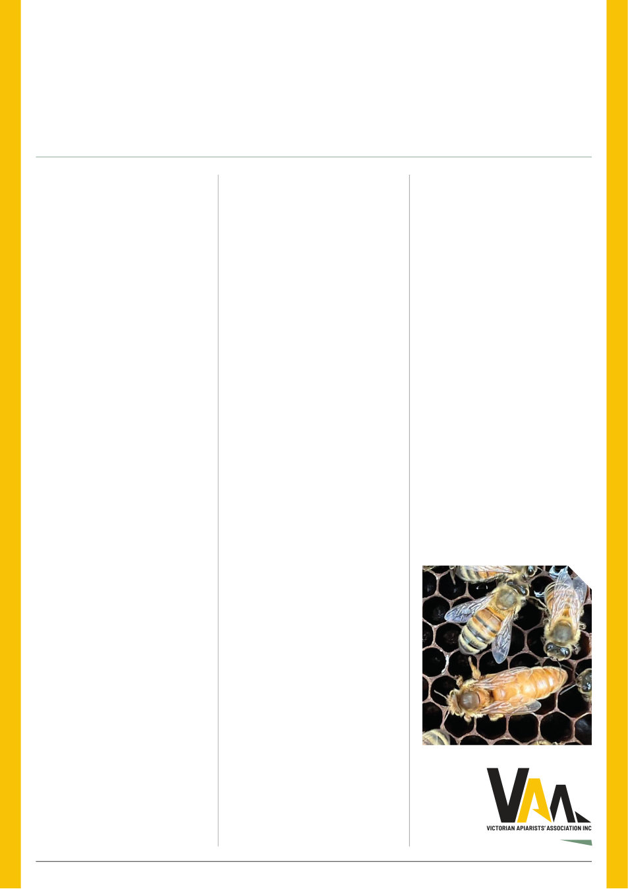

VAA AUSTRALIAN BEE JOURNAL | VOL. 109 No. 09 September 2026 | 13
Australia has capable breeders, useful
science and valuable genetics. They also
show how easily momentum, knowledge
and relationships can be weakened when
a project ends, funding changes or key
people move on.
The VBRN proposal asks whether
Victoria
needs
a
durable
way
to
connect existing effort: queen breeders
and producers, commercial, sideline
and
recreational
beekeepers,
clubs,
researchers, assessment apiaries and
technical partners. It would also test how
Victorian activity could connect sensibly
with the Australian Queen Bee Breeder’s
Association (AQBBA)’s Australian VSH
Collective
and
the
wider
national
breeding effort.
That does not mean bringing all
breeding
under
one
organisation.
Breeders should continue to breed and
produce queens. Beekeepers should
retain a practical role in assessing what
works under their conditions. The possible
value of a network lies in shared methods,
training,
coordination,
records
and
continuity - the less glamorous parts of the
work, but often the difference between a
useful seasonal project and an enduring
industry capability.
“The possible value of a
network lies in shared methods,
training, coordination, records
and continuity – the less
glamorous parts of the work, but
often the difference between a
useful seasonal project and an
enduring industry capability.”
The consultation will therefore need
to deal with practical questions, including
what the VBRN should and should not
do; how different parts of the industry
could contribute; what safeguards are
needed around genetics, data, intellectual
property, access and conflicts of interest;
and whether there is enough capability
and support to justify continuing.
Not everyone needs to breed queens to
have something useful to offer. Commercial
operators may be able to assess colonies
under production conditions. Clubs and
recreational beekeepers may contribute
observations, local knowledge, training
In the last edition of the ABJ, I put
forward the case for Victoria to take
a more organised role in the long-
term resilience of our honey bees.
That article was intended to open a
discussion, not announce a settled
VAA position. Since then, the VAA
Board has considered the concept
and endorsed a defined next step.
On 10 August 2026, the Board
authorised a time-limited Gate 1 scoping,
establishment and consultation phase for
the proposed Victorian Bee Resilience
Network (VBRN), under VAA stewardship.
This gives the Association authority to
consult the industry, test the need and
available capability, and work through the
practical questions that would need to be
answered before any ongoing network
could be established.
It is equally important to be clear
about what the decision does not do.
The Board has not approved a finished
operating network. It has not settled
future governance, participation, funding,
data, genetics, ownership, access or
commercial arrangements. It does not
establish a VAA queen-breeding business,
and it is not an announcement that varroa-
resistant queens are available.
The detailed proposal will return to the
Board at Gate 2 on 14 December 2026.
At that point, the Board may approve,
amend, narrow, defer or decide not to
proceed. That decision will be informed by
what we hear during consultation and by
the due-diligence work now under way.
Why take the time to scope this
properly?
Varroa
has
changed
the
operating environment for Australian
beekeeping, but genetic improvement
cannot be treated as a quick fix. Monitoring,
effective treatment, biosecurity, education
and sound husbandry remain essential.
Selection for resilience is a complementary,
long-term pathway, measured across
colonies, apiaries and generations.
Nor are we starting from a blank page.
The scoping work draws on lessons from
eastern and western Australian breeding
efforts dating back to the 1980s, as well
as Plan Bee, the National Honey Bee
Breeding Strategy 2024-2029, the 2025
Queen Sector Analysis and discussions
with beekeepers. Those efforts show that
VAA Victorian Bee Resilience Network
VBRN: the discussion continues
VAA Board endorses a time-limited scoping and consultation phase
By Mark Bichan, VAA Board member
support, apiary sites or carefully defined
assessment work. Just as importantly,
people may identify risks, gaps or reasons
the proposal needs to change.
VAA members will shortly be invited
to take part in the consultation. Please
watch your inbox and the VAA’s social
media channels for details. The invitation
is to help test and shape the proposal –
not to join a finished program.
The purpose of this phase is not to
persuade the industry that the answer
has already been decided. It is to find out
whether the VBRN would be useful, what
would make it credible and workable, and
whether the VAA should continue beyond
Gate 1. If you see value in the idea, have
concerns about it or believe something
important is missing, we need to hear
from you.
VICTORIAN BEE RESILIENCE NETWORK
“Clubs and recreational
beekeepers may contribute
observations, local knowledge,
training support, apiary sites
or carefully defined assessment
work. Just as importantly,
people may identify risks, gaps
or reasons the proposal needs
to change.”